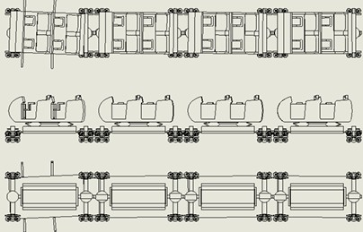
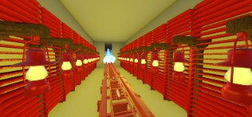
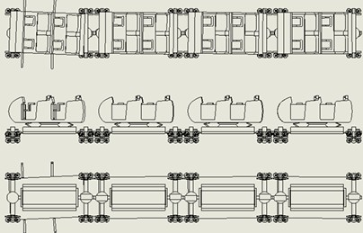
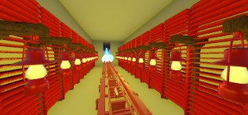

TMU Thrill Design Invitational | Fall 2024
I was part of a six-person team tasked with designing a fully themed attraction under a tight 24–72 hour timeline. I focused on ride layout, guest experience, and immersive storytelling while receiving feedback from Universal Creative and industry experts. The challenge pushed me to think creatively and technically, strengthening my skills in theme park design and engineering.
My Role: Mechanical designer, safety & accessibility.
Awards: Distinction for Creative Skill & Technology Integration.
TMU Thrill Design Invitational | Fall 2025
I will join a six-person team to tackle a new theme park design challenge, working within the same 24–72 hour format. I’m looking forward to developing interactive guest experiences, ride mechanics, and immersive theming, guided by feedback from Universal Creative juries. This next challenge will be a chance to further grow my creative problem-solving and collaborative design abilities.
My Role: Team Lead, 3D modeling, ride system simulation (NoLimits2), concept illustrations.
Swamp Thrills Theme Park Competition | Spring 2025
I was part of a six-person team in Gator TPED’s annual Swamp Thrills competition, a virtual, multidisciplinary student design challenge. Our team created a food-themed attraction area, designing rides, storytelling elements, and guest flow. On presentation day, our project was reviewed by a panel of theme park industry professionals, giving us valuable feedback on our design and execution.
My Role: 3D modeling, queue/layout, and mechanical systems simulation.
📄 View Team Workbook (PDF)


 


